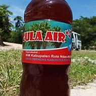

Tentang Gula Air
Gula air adalah minuman manis tradisional yang berasal dari Pulau Rote, Nusa Tenggara Timur. Minuman ini sangat populer di kalangan masyarakat setempat dan menjadi bagian penting dari budaya mereka. Gula air dibuat dari nira lontar, yaitu cairan manis yang diambil dari pohon lontar. Proses pembuatannya cukup sederhana namun membutuhkan waktu. Nira lontar yang telah dikumpulkan kemudian direbus hingga mengental dan menjadi sirup kental berwarna cokelat. Gula air memiliki rasa manis yang khas dan sedikit karamel. Masyarakat Rote biasanya mengonsumsi gula air sebagai minuman penyegar atau sebagai pemanis alami untuk makanan dan minuman lainnya. Selain rasanya yang enak, gula air juga dipercaya memiliki beberapa manfaat
Resep Pembuatan
Bahan-bahan
- Nira lontar segar
- Wadah untuk merebus (biasanya terbuat dari tanah liat)
- Api unggun atau kompor
Alat
- Pisau untuk menyadap nira
- Wadah penampung nira
- saringan
Langkah-langkah
- Pilih pohon lontar yang sudah dewasa dan menghasilkan nira yang banyak.
- Sayat bagian bunga pohon lontar dengan hati-hati menggunakan pisau.
- Tampung nira yang keluar dalam wadah yang bersih. Proses penyadapan biasanya dilakukan pada pagi hari.
- Tuangkan nira yang sudah terkumpul ke dalam wadah untuk merebus.
- Panaskan nira di atas api unggun atau kompor dengan api sedang.
- Aduk terus menerus agar nira tidak gosong dan agar proses penguapan air berjalan merata.
- Terus panaskan nira hingga volume air menyusut dan nira semakin mengental.
- Proses ini membutuhkan waktu yang cukup lama, bisa mencapai beberapa jam
- Setelah nira mengental dan berwarna cokelat tua, saring nira untuk menghilangkan kotoran-kotoran.
- Gunakan saringan yang berpori halus agar hasil saringan lebih bersih.
- Biarkan nira yang sudah disaring dingin sebentar.
- Setelah dingin, tuangkan nira ke dalam botol atau wadah lain yang bersih dan kedap udara.
Penyajian
Gula Rote bisa disajikan dengan berbagai cara, baik sebagai minuman maupun sebagai bahan tambahan dalam berbagai hidangan.
Sebagai Pemanis Minuman:
- Minuman Panas: Tambahkan gula air ke dalam kopi, teh, atau cokelat panas sesuai selera.
- Minuman Dingin: Gunakan gula air untuk membuat es teh manis, es kopi, atau berbagai jenis minuman soda.
- Minuman Segar: Tambahkan gula air ke dalam jus buah, smoothies, atau minuman herbal untuk memberikan rasa manis.
Sebagai Bahan Masak:
- Kue dan Kue Kering: Gunakan gula air sebagai pengganti gula pasir dalam pembuatan berbagai jenis kue.
- Saus dan Selai: Tambahkan gula air ke dalam saus atau selai untuk memberikan rasa manis dan mengkilat.
- Masakan Tumis dan Goreng: Gunakan gula air untuk memberikan rasa manis pada masakan tumis atau goreng.
Sebagai Bahan Membuat Sirup:
- Sirup Buah: Campurkan gula air dengan ekstrak buah untuk membuat sirup buah yang bisa digunakan sebagai topping atau bahan campuran minuman.
- irup Cokelat: Campurkan gula air dengan bubuk cokelat untuk membuat sirup cokelat yang lezat.